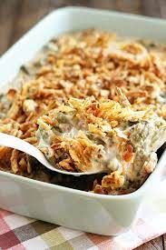

Chicken and Green Bean Casserole
Ingredients

- 2 cans green beans, drained
- 2 chicken breasts, cooked, and cubed
- 1 can water chestnuts, sliced and drained
- 1 can cream of chicken soup
- 1 cup miracle whip
- 1 tbsp lemon juice
- 1 cup shredded cheddar cheese
Instructions
- Put beans in bottom of large casserole dish.
- Add chicken layer, then layer water chestnuts.
- Mix cream of chicken soup, miracle whip, and lemon juice. Pour over chicken micture.
- Sprinkle with cheese
- Bake at 350°F for 45 minutes.
[Back to Dinners]
[Home]